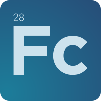

About

Welcome to my online resume!
On this site, you will find details about my academic journey, research, relevant publications, and ongoing projects. Explore the sections to learn more about my work.
This site was developed entirely with open-source software. If you are interested in learning more, please get in contact. If you notice any display or content organization issues, please let me know.
Thank you for visiting, and I hope you find useful information here!